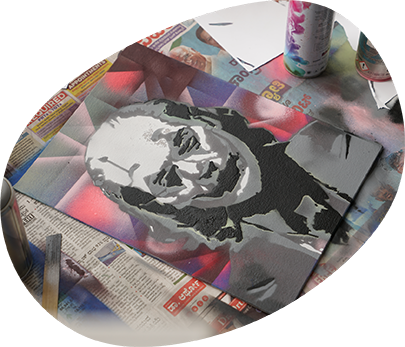
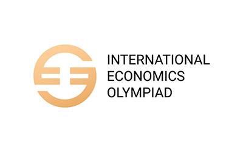
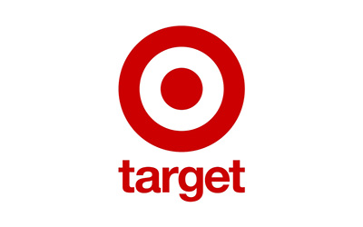
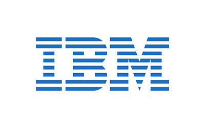
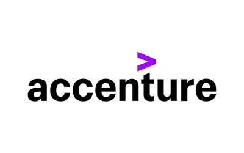

Ample space is available for facilities that enable students to ideate, explore novel concepts, digitize these to simulate appearance & performance under different test situations & prototype concepts as feasible


Duration:
4 Years
Affiliation:
PES University
Campus:
Ring Road (RR) Campus
Admission Test:
PES Entrance Test / UCEED
Ranked #1
#1 University in Karnataka (New Universities under 5 years) by KSURF
PESU is NAAC A+ Accredited
PES University is accredited with A+ grade in NAAC, a national level accreditation body which is an autonomous institution under University Grants Commission (UGC)
Ranked #1
#1 B School in Karnataka – Times of India B School Rankings 2021
India's Most Preferred
PES is the second most preferred destination next to IIMB for B-School aspirants – Times of India
Get In Touch
Have questions about Bachelor of Design admissions?
Share a few details and our admissions counsellors will walk you through eligibility, fees, scholarships and the application timeline — no obligation.
- Fast Response — a counsellor calls back within 24 hours.
- One-on-One Guidance — personalised help with eligibility and documentation.
- No Obligation — ask questions before you decide to apply.
Enquire Now
Fill this in and we'll reach out shortly.
Overview
Bachelor of Design
Recognizing the transformative role of design in education and its seamless integration with disciplines like engineering and the arts, PES University has built a vibrant and dynamic Design School at the heart of its academic ecosystem.
PES University’s Design School offers a four-year Bachelor of Design (B.Des) program with specializations in Product Design, Interaction Design, Communication Design, and Fashion Design. The first year builds a strong design foundation before students specialize.
With a distinguished faculty from premier institutes (IISc/IITs) and a culture of collaboration across design and engineering streams, students are encouraged to innovate, work in interdisciplinary teams, and pursue entrepreneurial ventures. Graduates are well-prepared for both leading roles in top organizations and for launching their own design practices.



Eligibility
50% marks in 10+2 or equivalent in any stream from a recognized board with English as a mandatory course or Atleast 50% aggregate in 3 year diploma with English as a mandatory course. Test score in PES Entrance Test or UCEED.
About the Programme
Why Choose to Pursue a B.Des Degree?
Despite being a preferred service destination, India also has a strong manufacturing base that is being promoted very well through the ‘Make in India’ campaign.

Experts believe that it is a matter of time before ‘Make in India’, foremost means ‘Designed in India’. The design degrees on offer prepare students with the skills to design tangible and intangible products and making these within India would mean contributing to the national cause. If you appreciate the arts and crafts, tried your hand at them, did well and are mulling about why these skills may not be integral to mainstream career options, then pursuing a design degree could be that first-step forward for you.
If you appreciate arts and crafts, have dabbled in them successfully, and often wonder why such creative skills aren’t central to mainstream careers, then pursuing a design degree could be your first step forward. More specifically, if you’ve nurtured a constructive discontent—thinking why the products you see around could be better in usability, appeal, or affordability, and you find yourself coming up with alternatives—Product Design could be your calling. Similarly, if you envision ways to improve interactions between humans and their environments, Interaction Design might be the path for you. If you are passionate about aesthetics, fabrics, and creating apparel that blends creativity with functionality, Fashion Design opens doors to a vibrant and dynamic industry. The growing emphasis on smart initiatives and digital experiences also increases the demand for Interaction Design and Communication Design professionals.
About the Programme
Facilities at PESU Design

Curriculum
Curriculum Structure
- 5
- 5
- 4
- 4
- 4
- 2
- 5
- 5
- 4
- 4
- 4
- 2
- 4
- 4
- 4
- 4
- 4
- 2
- 4
- 4
- 4
- 4
- 4
- 2
- 4
- 4
- 4
- 4
- 4
- 2
- 4
- 4
- 4
- 4
- 4
- 2
- 2
- 4
- 5
- 5
- 4
- 4
- 5
- 5
- 4
- 4
- 5
- 5
- 4
- 4
- 5
- 5
- 4
- 4
- 4
- 2
- 4
- 4
- 5
- 5
- 4
- 5
- 5
- 4
- 5
- 5
- 4
- 5
- 5
- 4
- 4
| Course Title | Credits |
|---|---|
| Capstone - Phase II | 6* |
| Elective III | |
| (Toy Design / Ceramics / VFX / Fashion Styling) | 4 |
| Total | 10 |
Note: *Extra hours to be decided by faculty.
| Course Title | Credits |
|---|---|
| Internship | 6 |
| Capstone - Phase III | 2 |
| Summer Internship / Craft Documentation* | 2 |
| Total | 10 |
Note: *Completed in Summer. 1 Credit = 2 Weeks
| Course Title | Credits |
|---|---|
| Internship** | 2* |
| Craft Documentation** | 2* |
| Total | 2 |
Note: *Credits to be added in Semester VIII **1 Credit = 2 Weeks
About the Programme
About the B.Des Program
The Bachelor of Design (B.Des) program at PES University is a dynamic blend of creativity, technology, and problem-solving. Designed to nurture the next generation of innovative thinkers, the program offers an interdisciplinary approach to design education, preparing students for diverse and evolving design careers.
Comprehensive Curriculum
A well-rounded course structure that builds foundational knowledge, hones core design skills, and allows for advanced specialization.
State-of-the-Art Infrastructure
Access to advanced labs, studios, and tools that support creative exploration and technical excellence.
Hands-On Learning
Emphasis on real-world projects, workshops, and internships to provide practical exposure and industry insights.
Specializations
Options to specialize in Industrial Design, Communication Design, Interaction Design, or Fashion Design, ensuring a tailored educational experience.
Expert Faculty
Guidance from experienced academicians and industry professionals who inspire and mentor students throughout their journey.
Industry Connect
Participation in internships, live projects, and design challenges with leading companies to gain hands-on experience.
The program is designed to equip students with the creative and entrepreneurial skills needed to excel in today’s competitive design landscape, fostering a passion for innovation and a commitment to making a meaningful impact through design.
About the Programme
Design Santhe: Where Creativity Meets Entrepreneurship
Design Santhe is an exciting annual event that gives students the opportunity to showcase and sell their design creations to the public. This unique platform not only provides students with valuable exposure but also allows them to validate their designs by engaging directly with customers who purchase their products.
Through participation in Design Santhe, students gain critical insights into the business aspects of design, including product pricing, marketing strategies, sales techniques, and customer interaction. The event fosters an entrepreneurial mindset, helping students bridge the gap between creativity and business. This hands-on experience plays a key role in shaping the next generation of designpreneurs, equipping them with the skills and confidence to thrive in both the design and business worlds.
Curriculum
Curriculum Overview
The Bachelor of Design program at PES University offers a dynamic and well-rounded curriculum that integrates foundational skills, advanced design techniques, and industry-focused applications. Spanning over four years, the program is structured to nurture creativity, build technical expertise, and foster critical thinking.

Year 1: Foundation Year
- Focus: Fundamentals of Design
- Build a strong base in design principles, drawing, color theory, and creative problem-solving.
- Explore courses in design history, cultural studies, and visual storytelling to gain context and inspiration.
- Introduction to digital tools and software essential for modern design practices.
Year 2: Building Core Competencies Across Design Disciplines
- Focus: Exploration and Skill Development
- Gain exposure to foundational subjects from Fashion Design, Industrial Design, Communication Design, and Interaction Design, ensuring a holistic understanding of diverse design domains.
- Build a strong foundation for decision-making in specialization by experiencing the fundamentals of each stream, helping align the students’ interests with their career goals.
- Equip students with industry-relevant skills that enhance their value in the job market, regardless of their chosen specialization.


Year 3: Specialization
- Focus: Advanced Learning in chosen field
- Hone the students' expertise with advanced courses and projects specific to their specialization.
- Industrial Design: Product development, digital surface sculpting, sustainable material explorations, to name a few
- Communication Design: Graphic design, branding, advertising, animation, visual effects, to name a few
- Interaction Design: Usability testing, interaction prototyping, UI/UX, AI, to name a few
- Fashion Design: Fashion Design Tools, Sustainable Fashion, Apparel Innovation, to name a few
- Participate in live projects, and collaborations with industry partners to gain real-world experience.
Year 4: Capstone Project and Industry Integration
- Focus: Professional Portfolio and Capstone Project
- Work on a comprehensive capstone project that demonstrates the students design thinking and problem-solving skills in their specialization.
- Develop a professional portfolio showcasing their academic and industry projects.
- Courses on entrepreneurship, intellectual property, and business of design to prepare for a career in design or launching their own venture.
- Internship with an industry partner, providing valuable hands-on experience. This opportunity allows students to apply their skills in real-world settings, gain insights into the design process in professional environments, and build a network within the industry.
About the Programme
Why Design Matters?
Design Santhe is an exciting annual event that gives students the opportunity to showcase and sell their design creations to the public. This unique platform not only provides students with valuable exposure but also allows them to validate their designs by engaging directly with customers who purchase their products.

Choose Your Path
Electives & Workshops
Throughout the program, students can choose from a variety of electives, such as Toy Design, Printmaking, Web Design, and Packaging Design to name a few. Hands-on workshops, guest lectures, and design hackathons further enrich the learning experience.
About the Programme
Assessment & Learning Methodology
The curriculum emphasizes experiential learning, with assessments based on projects, critiques, and presentations. Group discussions, peer reviews, and faculty mentorship foster a collaborative and engaging learning environment.
About the Programme
Bachelor of Design (B.Des) - Empowering the Designers of the Future
- Welcome to the Bachelor of Design (B.Des) program at PES University – where creativity meets innovation and ideas are transformed into impactful designs. Our program nurtures aspiring designers into skilled professionals who shape the future with human-centered solutions.
About the Programme
Start Your Design Journey Today
- Unleash your potential and become a trailblazer in the world of design. Apply now to the Bachelor of Design program at PES University and take the first step toward a transformative career.
About the Programme
Opportunities On Graduating With B.Des Degree?
On graduating from the product design stream, the roles that may be offered in the industry could be Industrial Designer, Design Engineer, Design Manager, Product Designer etc.. These offers typically depend on the individual’s performance (generally evaluated over a portfolio of alongside other considerations that the industry may set) & work experience.
The typical industry roles for Interaction Design & Communication Design graduates are UI, UX designer, Interaction designer, Graphic Designer etc. A trend which works to the advantage for Interaction & Communication Designers is that more companies now believe that using these designers early in the product/service development process can change the course of conversations & add considerable value.
With Fashion Design Specialization, Graduates could pursue roles like: Fashion Designer, Textile/Surface Pattern Designer, Technical Designer / Pattern Master, Fashion Stylist / Visual Merchandiser, Sustainable Fashion Consultant, Fashion Entrepreneur (launching their own line). PESU’s Design Santhe—a marketplace event—offers opportunities for fashion students to showcase and sell their work.
As an estimate of the job requirement in the industry, below is a snapshot of search-results for the designer roles mentioned above on the job portal www.naukri.com (as of September 15, 2024):
0 Product Designer Jobs
0 UI / UX Designer Jobs
0 Interaction Designer Jobs
0 Communication Designer Jobs
0 Graphic Designer Jobs
0 Fashion Designer Jobs
About the Programme
Brochures
Department Design
 Department Design
Department Design Communication Design

Communication DesignIndustrial Design

Industrial DesignInteraction Design
 Interaction Design
Interaction Design About the Programme
Industrial Design
Industrial Design students willl learn to conceptualize and create products that blend functionality, aesthetics, and innovation. This specialization focuses on designing tangible objects, from everyday appliances to complex machinery, with user-centric solutions. With hands-on exposure to prototyping, materials, and manufacturing processes, students will gain the skills to transform ideas into market-ready products that enhance lives.
About the Programme
Interaction Design
The Interaction Design stream will focus on designing interactions & not just interfaces. Again, interactions will look beyond the immediacy & seen within a larger societal context. Select courses in these specializations include User Experience, Usability Evaluation, Interaction Technologies & Media. Apart from the main courses, students will have electives (credit & non-credit courses), which will strengthen their abilities as an Interaction Designer.
About the Programme
Communication Design
Communication Design is a mixed discipline between design & information-development. Here we look at how media such as printed, crafted, electronic media or presentations communicate with people. The focus is also to create new media channels to ensure the message reaches the target audience. Some select courses within Communication Design would be Typography, Design, Storytelling & Narratives, Visual perception & Semiotics. Just like the other two streams, elective courses will be available for students specializing in Communication Design to strengthen their skills.
About the Programme
Fashion Design
Step into the dynamic world of style, creativity, and innovation with Fashion Design. This specialization blends artistic expression with technical expertise to help students craft apparel and accessories that resonate with contemporary trends and cultural narratives. From sketching and textile selection to garment construction and fashion marketing, students will gain a holistic understanding of the fashion industry. With hands-on experience in design studios and exposure to sustainable practices, this program prepares aspiring designers to create impactful collections and excel in the global fashion arena.

While Working Individually Is Encouraged, The Students Are Expected To Work Collaboratively In Teams With Students From Other Design Streams And Engineering Disciplines At PESU, Thereby Leveraging The Strengths Of A Diverse And Entrepreneurial PESU Culture. It Is Expected That Students In Design Also Lead Such Collaborative Initiatives Culminating In Starting Up Their Own Practice And Becoming Entrepreneurs. However, Students Could Also Choose To Be Employed In The Organizations That PESU Consistently Attracts From Placements.
Financial Support
Merit scholarships, awarded on performance
Over ₹140 crores in merit scholarships have been given to PES University students since 2014.
Merit Scholarships
Awarded on CGPA / SGPAScholarship
50%
Prof. MRD Scholarships
Merit Certificate + 50% Tuition Fee Refund for Top 5% of the Students based on their CGPA.
Scholarship
40%
Prof. CNR Rao Scholarships
Merit Certificate + 40% Tuition Fee Refund for the next 20% of the Students based on their SGPA.
Scholarship
7.75+
Distinction Awards
Merit Certificate for Students securing 7.75+ SGPA.
PES Loyalty Program
Awarded on family / institutional ties, every year of studyLoyalty
30%
PES Employees
Children of full-time staff, 5+ years employment.
Loyalty
20%
PES Institution Students
Graduates of any PES institution or sister concern.
Loyalty
10%
Siblings of Students
Siblings of currently enrolled PES students.
Loyalty
10%
Alumni Family
Siblings and children of PES University alumni.
University Highlights
Recognition beyond the programme
The accreditations and rankings behind PES University as a whole.
Ranking
#1
University in Karnataka
Among new universities under 5 years, ranked by KSURF.
Accreditation
A+
NAAC Accredited
PES University holds NAAC's top-grade accreditation nationally.
Ranking
#1
B-School in Karnataka
Times of India B-School Rankings, 2021.
Recognition
2nd
Most Preferred B-School
Second only to IIM Bangalore among B-School aspirants, per Times of India.